- Advanced R project to predict lung cancer in both Female and male participants
- Binomial Regression
- Comes under classification with yes/no output
ADVANCED R-FINAL PROJECT
LUNG CANCER DETECTION
Madanaganesh
project
PROJECT OVERVIEW
DATA INFORMATION
- Data contains 229 instances
- Has 9 predictor attributes and 1 predicted attribute
- Explaining attributes
-inst-(Numeric)
-time-(Numeric)
-wt.loss-(Numeric)
-age-(Numeric)
-sex-(logical)
-ph.ecog- (Numeric)
-ph.karno-(Numeric)
-pat.karno-(numeric)
-meal.cal-(numeric)
-Outcome-status-logical(YES or NO)
READ DATA
data<- read.csv("C:/Users/Madan/Documents/gp2.csv",header=TRUE, stringsAsFactors = TRUE)
data$status <- replace(data$status, data$status==1,1)
data$status <- replace(data$status, data$status==2,0)
data$status <- as.factor(data$status)
str(data)
## 'data.frame': 228 obs. of 11 variables:
## $ X : int 1 2 3 4 5 6 7 8 9 10 ...
## $ inst : int 3 3 3 5 1 12 7 11 1 7 ...
## $ time : int 306 455 1010 210 883 1022 310 361 218 166 ...
## $ status : Factor w/ 2 levels "0","1": 1 1 2 1 1 2 1 1 1 1 ...
## $ age : int 74 68 56 57 60 74 68 71 53 61 ...
## $ sex : int 1 1 1 1 1 1 2 2 1 1 ...
## $ ph.ecog : int 1 0 0 1 0 1 2 2 1 2 ...
## $ ph.karno : int 90 90 90 90 100 50 70 60 70 70 ...
## $ pat.karno: int 100 90 90 60 90 80 60 80 80 70 ...
## $ meal.cal : int 1175 1225 NA 1150 NA 513 384 538 825 271 ...
## $ wt.loss : int NA 15 15 11 0 0 10 1 16 34 ...
##IMPUTE DATA using mean
library(mice)
md.pattern(data)#finding missing data
## X time status age sex inst ph.ecog ph.karno pat.karno wt.loss meal.cal
## 167 1 1 1 1 1 1 1 1 1 1 1
## 1 1 1 1 1 1 0 1 1 1 1 1
## 1 1 1 1 1 1 1 0 1 1 1 1
## 2 1 1 1 1 1 1 1 1 0 1 1
## 42 1 1 1 1 1 1 1 1 1 1 0
## 10 1 1 1 1 1 1 1 1 1 0 1
## 1 1 1 1 1 1 1 1 1 0 1 0
## 3 1 1 1 1 1 1 1 1 1 0 0
## 1 1 1 1 1 1 1 1 0 1 0 0
## 0 0 0 0 0 1 1 1 3 14 47
##
## 167 0
## 1 1
## 1 1
## 2 1
## 42 1
## 10 1
## 1 2
## 3 2
## 1 3
## 67
mecompdata <- mice(data,m=10,maxit=50,meth='pmm',seed=500)
##
## iter imp variable
## 1 1 inst ph.ecog ph.karno pat.karno meal.cal wt.loss
## 1 2 inst ph.ecog ph.karno pat.karno meal.cal wt.loss
## 1 3 inst ph.ecog ph.karno pat.karno meal.cal wt.loss
## 1 4 inst ph.ecog ph.karno pat.karno meal.cal wt.loss
## 1 5 inst ph.ecog ph.karno pat.karno meal.cal wt.loss
## 1 6 inst ph.ecog ph.karno pat.karno meal.cal wt.loss
## 1 7 inst ph.ecog ph.karno pat.karno meal.cal wt.loss
## 1 8 inst ph.ecog ph.karno pat.karno meal.cal wt.loss
## 1 9 inst ph.ecog ph.karno pat.karno meal.cal wt.loss
## 1 10 inst ph.ecog ph.karno pat.karno meal.cal wt.loss
## 2 1 inst ph.ecog ph.karno pat.karno meal.cal wt.loss
## 2 2 inst ph.ecog ph.karno pat.karno meal.cal wt.loss
## 2 3 inst ph.ecog ph.karno pat.karno meal.cal wt.loss
## 2 4 inst ph.ecog ph.karno pat.karno meal.cal wt.loss
## 2 5 inst ph.ecog ph.karno pat.karno meal.cal wt.loss
## 2 6 inst ph.ecog ph.karno pat.karno meal.cal wt.loss
## 2 7 inst ph.ecog ph.karno pat.karno meal.cal wt.loss
## 2 8 inst ph.ecog ph.karno pat.karno meal.cal wt.loss
## 2 9 inst ph.ecog ph.karno pat.karno meal.cal wt.loss
## 2 10 inst ph.ecog ph.karno pat.karno meal.cal wt.loss
## 3 1 inst ph.ecog ph.karno pat.karno meal.cal wt.loss
## 3 2 inst ph.ecog ph.karno pat.karno meal.cal wt.loss
## 3 3 inst ph.ecog ph.karno pat.karno meal.cal wt.loss
## 3 4 inst ph.ecog ph.karno pat.karno meal.cal wt.loss
## 3 5 inst ph.ecog ph.karno pat.karno meal.cal wt.loss
## 3 6 inst ph.ecog ph.karno pat.karno meal.cal wt.loss
## 3 7 inst ph.ecog ph.karno pat.karno meal.cal wt.loss
## 3 8 inst ph.ecog ph.karno pat.karno meal.cal wt.loss
## 3 9 inst ph.ecog ph.karno pat.karno meal.cal wt.loss
## 3 10 inst ph.ecog ph.karno pat.karno meal.cal wt.loss
## 4 1 inst ph.ecog ph.karno pat.karno meal.cal wt.loss
## 4 2 inst ph.ecog ph.karno pat.karno meal.cal wt.loss
## 4 3 inst ph.ecog ph.karno pat.karno meal.cal wt.loss
## 4 4 inst ph.ecog ph.karno pat.karno meal.cal wt.loss
## 4 5 inst ph.ecog ph.karno pat.karno meal.cal wt.loss
## 4 6 inst ph.ecog ph.karno pat.karno meal.cal wt.loss
## 4 7 inst ph.ecog ph.karno pat.karno meal.cal wt.loss
## 4 8 inst ph.ecog ph.karno pat.karno meal.cal wt.loss
## 4 9 inst ph.ecog ph.karno pat.karno meal.cal wt.loss
## 4 10 inst ph.ecog ph.karno pat.karno meal.cal wt.loss
## 5 1 inst ph.ecog ph.karno pat.karno meal.cal wt.loss
## 5 2 inst ph.ecog ph.karno pat.karno meal.cal wt.loss
## 5 3 inst ph.ecog ph.karno pat.karno meal.cal wt.loss
## 5 4 inst ph.ecog ph.karno pat.karno meal.cal wt.loss
## 5 5 inst ph.ecog ph.karno pat.karno meal.cal wt.loss
## 5 6 inst ph.ecog ph.karno pat.karno meal.cal wt.loss
## 5 7 inst ph.ecog ph.karno pat.karno meal.cal wt.loss
## 5 8 inst ph.ecog ph.karno pat.karno meal.cal wt.loss
## 5 9 inst ph.ecog ph.karno pat.karno meal.cal wt.loss
## 5 10 inst ph.ecog ph.karno pat.karno meal.cal wt.loss
## 6 1 inst ph.ecog ph.karno pat.karno meal.cal wt.loss
## 6 2 inst ph.ecog ph.karno pat.karno meal.cal wt.loss
## 6 3 inst ph.ecog ph.karno pat.karno meal.cal wt.loss
## 6 4 inst ph.ecog ph.karno pat.karno meal.cal wt.loss
## 6 5 inst ph.ecog ph.karno pat.karno meal.cal wt.loss
## 6 6 inst ph.ecog ph.karno pat.karno meal.cal wt.loss
## 6 7 inst ph.ecog ph.karno pat.karno meal.cal wt.loss
## 6 8 inst ph.ecog ph.karno pat.karno meal.cal wt.loss
## 6 9 inst ph.ecog ph.karno pat.karno meal.cal wt.loss
## 6 10 inst ph.ecog ph.karno pat.karno meal.cal wt.loss
## 7 1 inst ph.ecog ph.karno pat.karno meal.cal wt.loss
## 7 2 inst ph.ecog ph.karno pat.karno meal.cal wt.loss
## 7 3 inst ph.ecog ph.karno pat.karno meal.cal wt.loss
## 7 4 inst ph.ecog ph.karno pat.karno meal.cal wt.loss
## 7 5 inst ph.ecog ph.karno pat.karno meal.cal wt.loss
## 7 6 inst ph.ecog ph.karno pat.karno meal.cal wt.loss
## 7 7 inst ph.ecog ph.karno pat.karno meal.cal wt.loss
## 7 8 inst ph.ecog ph.karno pat.karno meal.cal wt.loss
## 7 9 inst ph.ecog ph.karno pat.karno meal.cal wt.loss
## 7 10 inst ph.ecog ph.karno pat.karno meal.cal wt.loss
## 8 1 inst ph.ecog ph.karno pat.karno meal.cal wt.loss
## 8 2 inst ph.ecog ph.karno pat.karno meal.cal wt.loss
## 8 3 inst ph.ecog ph.karno pat.karno meal.cal wt.loss
## 8 4 inst ph.ecog ph.karno pat.karno meal.cal wt.loss
## 8 5 inst ph.ecog ph.karno pat.karno meal.cal wt.loss
## 8 6 inst ph.ecog ph.karno pat.karno meal.cal wt.loss
## 8 7 inst ph.ecog ph.karno pat.karno meal.cal wt.loss
## 8 8 inst ph.ecog ph.karno pat.karno meal.cal wt.loss
## 8 9 inst ph.ecog ph.karno pat.karno meal.cal wt.loss
## 8 10 inst ph.ecog ph.karno pat.karno meal.cal wt.loss
## 9 1 inst ph.ecog ph.karno pat.karno meal.cal wt.loss
## 9 2 inst ph.ecog ph.karno pat.karno meal.cal wt.loss
## 9 3 inst ph.ecog ph.karno pat.karno meal.cal wt.loss
## 9 4 inst ph.ecog ph.karno pat.karno meal.cal wt.loss
## 9 5 inst ph.ecog ph.karno pat.karno meal.cal wt.loss
## 9 6 inst ph.ecog ph.karno pat.karno meal.cal wt.loss
## 9 7 inst ph.ecog ph.karno pat.karno meal.cal wt.loss
## 9 8 inst ph.ecog ph.karno pat.karno meal.cal wt.loss
## 9 9 inst ph.ecog ph.karno pat.karno meal.cal wt.loss
## 9 10 inst ph.ecog ph.karno pat.karno meal.cal wt.loss
## 10 1 inst ph.ecog ph.karno pat.karno meal.cal wt.loss
## 10 2 inst ph.ecog ph.karno pat.karno meal.cal wt.loss
## 10 3 inst ph.ecog ph.karno pat.karno meal.cal wt.loss
## 10 4 inst ph.ecog ph.karno pat.karno meal.cal wt.loss
## 10 5 inst ph.ecog ph.karno pat.karno meal.cal wt.loss
## 10 6 inst ph.ecog ph.karno pat.karno meal.cal wt.loss
## 10 7 inst ph.ecog ph.karno pat.karno meal.cal wt.loss
## 10 8 inst ph.ecog ph.karno pat.karno meal.cal wt.loss
## 10 9 inst ph.ecog ph.karno pat.karno meal.cal wt.loss
## 10 10 inst ph.ecog ph.karno pat.karno meal.cal wt.loss
## 11 1 inst ph.ecog ph.karno pat.karno meal.cal wt.loss
## 11 2 inst ph.ecog ph.karno pat.karno meal.cal wt.loss
## 11 3 inst ph.ecog ph.karno pat.karno meal.cal wt.loss
## 11 4 inst ph.ecog ph.karno pat.karno meal.cal wt.loss
## 11 5 inst ph.ecog ph.karno pat.karno meal.cal wt.loss
## 11 6 inst ph.ecog ph.karno pat.karno meal.cal wt.loss
## 11 7 inst ph.ecog ph.karno pat.karno meal.cal wt.loss
## 11 8 inst ph.ecog ph.karno pat.karno meal.cal wt.loss
## 11 9 inst ph.ecog ph.karno pat.karno meal.cal wt.loss
## 11 10 inst ph.ecog ph.karno pat.karno meal.cal wt.loss
## 12 1 inst ph.ecog ph.karno pat.karno meal.cal wt.loss
## 12 2 inst ph.ecog ph.karno pat.karno meal.cal wt.loss
## 12 3 inst ph.ecog ph.karno pat.karno meal.cal wt.loss
## 12 4 inst ph.ecog ph.karno pat.karno meal.cal wt.loss
## 12 5 inst ph.ecog ph.karno pat.karno meal.cal wt.loss
## 12 6 inst ph.ecog ph.karno pat.karno meal.cal wt.loss
## 12 7 inst ph.ecog ph.karno pat.karno meal.cal wt.loss
## 12 8 inst ph.ecog ph.karno pat.karno meal.cal wt.loss
## 12 9 inst ph.ecog ph.karno pat.karno meal.cal wt.loss
## 12 10 inst ph.ecog ph.karno pat.karno meal.cal wt.loss
## 13 1 inst ph.ecog ph.karno pat.karno meal.cal wt.loss
## 13 2 inst ph.ecog ph.karno pat.karno meal.cal wt.loss
## 13 3 inst ph.ecog ph.karno pat.karno meal.cal wt.loss
## 13 4 inst ph.ecog ph.karno pat.karno meal.cal wt.loss
## 13 5 inst ph.ecog ph.karno pat.karno meal.cal wt.loss
## 13 6 inst ph.ecog ph.karno pat.karno meal.cal wt.loss
## 13 7 inst ph.ecog ph.karno pat.karno meal.cal wt.loss
## 13 8 inst ph.ecog ph.karno pat.karno meal.cal wt.loss
## 13 9 inst ph.ecog ph.karno pat.karno meal.cal wt.loss
## 13 10 inst ph.ecog ph.karno pat.karno meal.cal wt.loss
## 14 1 inst ph.ecog ph.karno pat.karno meal.cal wt.loss
## 14 2 inst ph.ecog ph.karno pat.karno meal.cal wt.loss
## 14 3 inst ph.ecog ph.karno pat.karno meal.cal wt.loss
## 14 4 inst ph.ecog ph.karno pat.karno meal.cal wt.loss
## 14 5 inst ph.ecog ph.karno pat.karno meal.cal wt.loss
## 14 6 inst ph.ecog ph.karno pat.karno meal.cal wt.loss
## 14 7 inst ph.ecog ph.karno pat.karno meal.cal wt.loss
## 14 8 inst ph.ecog ph.karno pat.karno meal.cal wt.loss
## 14 9 inst ph.ecog ph.karno pat.karno meal.cal wt.loss
## 14 10 inst ph.ecog ph.karno pat.karno meal.cal wt.loss
## 15 1 inst ph.ecog ph.karno pat.karno meal.cal wt.loss
## 15 2 inst ph.ecog ph.karno pat.karno meal.cal wt.loss
## 15 3 inst ph.ecog ph.karno pat.karno meal.cal wt.loss
## 15 4 inst ph.ecog ph.karno pat.karno meal.cal wt.loss
## 15 5 inst ph.ecog ph.karno pat.karno meal.cal wt.loss
## 15 6 inst ph.ecog ph.karno pat.karno meal.cal wt.loss
## 15 7 inst ph.ecog ph.karno pat.karno meal.cal wt.loss
## 15 8 inst ph.ecog ph.karno pat.karno meal.cal wt.loss
## 15 9 inst ph.ecog ph.karno pat.karno meal.cal wt.loss
## 15 10 inst ph.ecog ph.karno pat.karno meal.cal wt.loss
## 16 1 inst ph.ecog ph.karno pat.karno meal.cal wt.loss
## 16 2 inst ph.ecog ph.karno pat.karno meal.cal wt.loss
## 16 3 inst ph.ecog ph.karno pat.karno meal.cal wt.loss
## 16 4 inst ph.ecog ph.karno pat.karno meal.cal wt.loss
## 16 5 inst ph.ecog ph.karno pat.karno meal.cal wt.loss
## 16 6 inst ph.ecog ph.karno pat.karno meal.cal wt.loss
## 16 7 inst ph.ecog ph.karno pat.karno meal.cal wt.loss
## 16 8 inst ph.ecog ph.karno pat.karno meal.cal wt.loss
## 16 9 inst ph.ecog ph.karno pat.karno meal.cal wt.loss
## 16 10 inst ph.ecog ph.karno pat.karno meal.cal wt.loss
## 17 1 inst ph.ecog ph.karno pat.karno meal.cal wt.loss
## 17 2 inst ph.ecog ph.karno pat.karno meal.cal wt.loss
## 17 3 inst ph.ecog ph.karno pat.karno meal.cal wt.loss
## 17 4 inst ph.ecog ph.karno pat.karno meal.cal wt.loss
## 17 5 inst ph.ecog ph.karno pat.karno meal.cal wt.loss
## 17 6 inst ph.ecog ph.karno pat.karno meal.cal wt.loss
## 17 7 inst ph.ecog ph.karno pat.karno meal.cal wt.loss
## 17 8 inst ph.ecog ph.karno pat.karno meal.cal wt.loss
## 17 9 inst ph.ecog ph.karno pat.karno meal.cal wt.loss
## 17 10 inst ph.ecog ph.karno pat.karno meal.cal wt.loss
## 18 1 inst ph.ecog ph.karno pat.karno meal.cal wt.loss
## 18 2 inst ph.ecog ph.karno pat.karno meal.cal wt.loss
## 18 3 inst ph.ecog ph.karno pat.karno meal.cal wt.loss
## 18 4 inst ph.ecog ph.karno pat.karno meal.cal wt.loss
## 18 5 inst ph.ecog ph.karno pat.karno meal.cal wt.loss
## 18 6 inst ph.ecog ph.karno pat.karno meal.cal wt.loss
## 18 7 inst ph.ecog ph.karno pat.karno meal.cal wt.loss
## 18 8 inst ph.ecog ph.karno pat.karno meal.cal wt.loss
## 18 9 inst ph.ecog ph.karno pat.karno meal.cal wt.loss
## 18 10 inst ph.ecog ph.karno pat.karno meal.cal wt.loss
## 19 1 inst ph.ecog ph.karno pat.karno meal.cal wt.loss
## 19 2 inst ph.ecog ph.karno pat.karno meal.cal wt.loss
## 19 3 inst ph.ecog ph.karno pat.karno meal.cal wt.loss
## 19 4 inst ph.ecog ph.karno pat.karno meal.cal wt.loss
## 19 5 inst ph.ecog ph.karno pat.karno meal.cal wt.loss
## 19 6 inst ph.ecog ph.karno pat.karno meal.cal wt.loss
## 19 7 inst ph.ecog ph.karno pat.karno meal.cal wt.loss
## 19 8 inst ph.ecog ph.karno pat.karno meal.cal wt.loss
## 19 9 inst ph.ecog ph.karno pat.karno meal.cal wt.loss
## 19 10 inst ph.ecog ph.karno pat.karno meal.cal wt.loss
## 20 1 inst ph.ecog ph.karno pat.karno meal.cal wt.loss
## 20 2 inst ph.ecog ph.karno pat.karno meal.cal wt.loss
## 20 3 inst ph.ecog ph.karno pat.karno meal.cal wt.loss
## 20 4 inst ph.ecog ph.karno pat.karno meal.cal wt.loss
## 20 5 inst ph.ecog ph.karno pat.karno meal.cal wt.loss
## 20 6 inst ph.ecog ph.karno pat.karno meal.cal wt.loss
## 20 7 inst ph.ecog ph.karno pat.karno meal.cal wt.loss
## 20 8 inst ph.ecog ph.karno pat.karno meal.cal wt.loss
## 20 9 inst ph.ecog ph.karno pat.karno meal.cal wt.loss
## 20 10 inst ph.ecog ph.karno pat.karno meal.cal wt.loss
## 21 1 inst ph.ecog ph.karno pat.karno meal.cal wt.loss
## 21 2 inst ph.ecog ph.karno pat.karno meal.cal wt.loss
## 21 3 inst ph.ecog ph.karno pat.karno meal.cal wt.loss
## 21 4 inst ph.ecog ph.karno pat.karno meal.cal wt.loss
## 21 5 inst ph.ecog ph.karno pat.karno meal.cal wt.loss
## 21 6 inst ph.ecog ph.karno pat.karno meal.cal wt.loss
## 21 7 inst ph.ecog ph.karno pat.karno meal.cal wt.loss
## 21 8 inst ph.ecog ph.karno pat.karno meal.cal wt.loss
## 21 9 inst ph.ecog ph.karno pat.karno meal.cal wt.loss
## 21 10 inst ph.ecog ph.karno pat.karno meal.cal wt.loss
## 22 1 inst ph.ecog ph.karno pat.karno meal.cal wt.loss
## 22 2 inst ph.ecog ph.karno pat.karno meal.cal wt.loss
## 22 3 inst ph.ecog ph.karno pat.karno meal.cal wt.loss
## 22 4 inst ph.ecog ph.karno pat.karno meal.cal wt.loss
## 22 5 inst ph.ecog ph.karno pat.karno meal.cal wt.loss
## 22 6 inst ph.ecog ph.karno pat.karno meal.cal wt.loss
## 22 7 inst ph.ecog ph.karno pat.karno meal.cal wt.loss
## 22 8 inst ph.ecog ph.karno pat.karno meal.cal wt.loss
## 22 9 inst ph.ecog ph.karno pat.karno meal.cal wt.loss
## 22 10 inst ph.ecog ph.karno pat.karno meal.cal wt.loss
## 23 1 inst ph.ecog ph.karno pat.karno meal.cal wt.loss
## 23 2 inst ph.ecog ph.karno pat.karno meal.cal wt.loss
## 23 3 inst ph.ecog ph.karno pat.karno meal.cal wt.loss
## 23 4 inst ph.ecog ph.karno pat.karno meal.cal wt.loss
## 23 5 inst ph.ecog ph.karno pat.karno meal.cal wt.loss
## 23 6 inst ph.ecog ph.karno pat.karno meal.cal wt.loss
## 23 7 inst ph.ecog ph.karno pat.karno meal.cal wt.loss
## 23 8 inst ph.ecog ph.karno pat.karno meal.cal wt.loss
## 23 9 inst ph.ecog ph.karno pat.karno meal.cal wt.loss
## 23 10 inst ph.ecog ph.karno pat.karno meal.cal wt.loss
## 24 1 inst ph.ecog ph.karno pat.karno meal.cal wt.loss
## 24 2 inst ph.ecog ph.karno pat.karno meal.cal wt.loss
## 24 3 inst ph.ecog ph.karno pat.karno meal.cal wt.loss
## 24 4 inst ph.ecog ph.karno pat.karno meal.cal wt.loss
## 24 5 inst ph.ecog ph.karno pat.karno meal.cal wt.loss
## 24 6 inst ph.ecog ph.karno pat.karno meal.cal wt.loss
## 24 7 inst ph.ecog ph.karno pat.karno meal.cal wt.loss
## 24 8 inst ph.ecog ph.karno pat.karno meal.cal wt.loss
## 24 9 inst ph.ecog ph.karno pat.karno meal.cal wt.loss
## 24 10 inst ph.ecog ph.karno pat.karno meal.cal wt.loss
## 25 1 inst ph.ecog ph.karno pat.karno meal.cal wt.loss
## 25 2 inst ph.ecog ph.karno pat.karno meal.cal wt.loss
## 25 3 inst ph.ecog ph.karno pat.karno meal.cal wt.loss
## 25 4 inst ph.ecog ph.karno pat.karno meal.cal wt.loss
## 25 5 inst ph.ecog ph.karno pat.karno meal.cal wt.loss
## 25 6 inst ph.ecog ph.karno pat.karno meal.cal wt.loss
## 25 7 inst ph.ecog ph.karno pat.karno meal.cal wt.loss
## 25 8 inst ph.ecog ph.karno pat.karno meal.cal wt.loss
## 25 9 inst ph.ecog ph.karno pat.karno meal.cal wt.loss
## 25 10 inst ph.ecog ph.karno pat.karno meal.cal wt.loss
## 26 1 inst ph.ecog ph.karno pat.karno meal.cal wt.loss
## 26 2 inst ph.ecog ph.karno pat.karno meal.cal wt.loss
## 26 3 inst ph.ecog ph.karno pat.karno meal.cal wt.loss
## 26 4 inst ph.ecog ph.karno pat.karno meal.cal wt.loss
## 26 5 inst ph.ecog ph.karno pat.karno meal.cal wt.loss
## 26 6 inst ph.ecog ph.karno pat.karno meal.cal wt.loss
## 26 7 inst ph.ecog ph.karno pat.karno meal.cal wt.loss
## 26 8 inst ph.ecog ph.karno pat.karno meal.cal wt.loss
## 26 9 inst ph.ecog ph.karno pat.karno meal.cal wt.loss
## 26 10 inst ph.ecog ph.karno pat.karno meal.cal wt.loss
## 27 1 inst ph.ecog ph.karno pat.karno meal.cal wt.loss
## 27 2 inst ph.ecog ph.karno pat.karno meal.cal wt.loss
## 27 3 inst ph.ecog ph.karno pat.karno meal.cal wt.loss
## 27 4 inst ph.ecog ph.karno pat.karno meal.cal wt.loss
## 27 5 inst ph.ecog ph.karno pat.karno meal.cal wt.loss
## 27 6 inst ph.ecog ph.karno pat.karno meal.cal wt.loss
## 27 7 inst ph.ecog ph.karno pat.karno meal.cal wt.loss
## 27 8 inst ph.ecog ph.karno pat.karno meal.cal wt.loss
## 27 9 inst ph.ecog ph.karno pat.karno meal.cal wt.loss
## 27 10 inst ph.ecog ph.karno pat.karno meal.cal wt.loss
## 28 1 inst ph.ecog ph.karno pat.karno meal.cal wt.loss
## 28 2 inst ph.ecog ph.karno pat.karno meal.cal wt.loss
## 28 3 inst ph.ecog ph.karno pat.karno meal.cal wt.loss
## 28 4 inst ph.ecog ph.karno pat.karno meal.cal wt.loss
## 28 5 inst ph.ecog ph.karno pat.karno meal.cal wt.loss
## 28 6 inst ph.ecog ph.karno pat.karno meal.cal wt.loss
## 28 7 inst ph.ecog ph.karno pat.karno meal.cal wt.loss
## 28 8 inst ph.ecog ph.karno pat.karno meal.cal wt.loss
## 28 9 inst ph.ecog ph.karno pat.karno meal.cal wt.loss
## 28 10 inst ph.ecog ph.karno pat.karno meal.cal wt.loss
## 29 1 inst ph.ecog ph.karno pat.karno meal.cal wt.loss
## 29 2 inst ph.ecog ph.karno pat.karno meal.cal wt.loss
## 29 3 inst ph.ecog ph.karno pat.karno meal.cal wt.loss
## 29 4 inst ph.ecog ph.karno pat.karno meal.cal wt.loss
## 29 5 inst ph.ecog ph.karno pat.karno meal.cal wt.loss
## 29 6 inst ph.ecog ph.karno pat.karno meal.cal wt.loss
## 29 7 inst ph.ecog ph.karno pat.karno meal.cal wt.loss
## 29 8 inst ph.ecog ph.karno pat.karno meal.cal wt.loss
## 29 9 inst ph.ecog ph.karno pat.karno meal.cal wt.loss
## 29 10 inst ph.ecog ph.karno pat.karno meal.cal wt.loss
## 30 1 inst ph.ecog ph.karno pat.karno meal.cal wt.loss
## 30 2 inst ph.ecog ph.karno pat.karno meal.cal wt.loss
## 30 3 inst ph.ecog ph.karno pat.karno meal.cal wt.loss
## 30 4 inst ph.ecog ph.karno pat.karno meal.cal wt.loss
## 30 5 inst ph.ecog ph.karno pat.karno meal.cal wt.loss
## 30 6 inst ph.ecog ph.karno pat.karno meal.cal wt.loss
## 30 7 inst ph.ecog ph.karno pat.karno meal.cal wt.loss
## 30 8 inst ph.ecog ph.karno pat.karno meal.cal wt.loss
## 30 9 inst ph.ecog ph.karno pat.karno meal.cal wt.loss
## 30 10 inst ph.ecog ph.karno pat.karno meal.cal wt.loss
## 31 1 inst ph.ecog ph.karno pat.karno meal.cal wt.loss
## 31 2 inst ph.ecog ph.karno pat.karno meal.cal wt.loss
## 31 3 inst ph.ecog ph.karno pat.karno meal.cal wt.loss
## 31 4 inst ph.ecog ph.karno pat.karno meal.cal wt.loss
## 31 5 inst ph.ecog ph.karno pat.karno meal.cal wt.loss
## 31 6 inst ph.ecog ph.karno pat.karno meal.cal wt.loss
## 31 7 inst ph.ecog ph.karno pat.karno meal.cal wt.loss
## 31 8 inst ph.ecog ph.karno pat.karno meal.cal wt.loss
## 31 9 inst ph.ecog ph.karno pat.karno meal.cal wt.loss
## 31 10 inst ph.ecog ph.karno pat.karno meal.cal wt.loss
## 32 1 inst ph.ecog ph.karno pat.karno meal.cal wt.loss
## 32 2 inst ph.ecog ph.karno pat.karno meal.cal wt.loss
## 32 3 inst ph.ecog ph.karno pat.karno meal.cal wt.loss
## 32 4 inst ph.ecog ph.karno pat.karno meal.cal wt.loss
## 32 5 inst ph.ecog ph.karno pat.karno meal.cal wt.loss
## 32 6 inst ph.ecog ph.karno pat.karno meal.cal wt.loss
## 32 7 inst ph.ecog ph.karno pat.karno meal.cal wt.loss
## 32 8 inst ph.ecog ph.karno pat.karno meal.cal wt.loss
## 32 9 inst ph.ecog ph.karno pat.karno meal.cal wt.loss
## 32 10 inst ph.ecog ph.karno pat.karno meal.cal wt.loss
## 33 1 inst ph.ecog ph.karno pat.karno meal.cal wt.loss
## 33 2 inst ph.ecog ph.karno pat.karno meal.cal wt.loss
## 33 3 inst ph.ecog ph.karno pat.karno meal.cal wt.loss
## 33 4 inst ph.ecog ph.karno pat.karno meal.cal wt.loss
## 33 5 inst ph.ecog ph.karno pat.karno meal.cal wt.loss
## 33 6 inst ph.ecog ph.karno pat.karno meal.cal wt.loss
## 33 7 inst ph.ecog ph.karno pat.karno meal.cal wt.loss
## 33 8 inst ph.ecog ph.karno pat.karno meal.cal wt.loss
## 33 9 inst ph.ecog ph.karno pat.karno meal.cal wt.loss
## 33 10 inst ph.ecog ph.karno pat.karno meal.cal wt.loss
## 34 1 inst ph.ecog ph.karno pat.karno meal.cal wt.loss
## 34 2 inst ph.ecog ph.karno pat.karno meal.cal wt.loss
## 34 3 inst ph.ecog ph.karno pat.karno meal.cal wt.loss
## 34 4 inst ph.ecog ph.karno pat.karno meal.cal wt.loss
## 34 5 inst ph.ecog ph.karno pat.karno meal.cal wt.loss
## 34 6 inst ph.ecog ph.karno pat.karno meal.cal wt.loss
## 34 7 inst ph.ecog ph.karno pat.karno meal.cal wt.loss
## 34 8 inst ph.ecog ph.karno pat.karno meal.cal wt.loss
## 34 9 inst ph.ecog ph.karno pat.karno meal.cal wt.loss
## 34 10 inst ph.ecog ph.karno pat.karno meal.cal wt.loss
## 35 1 inst ph.ecog ph.karno pat.karno meal.cal wt.loss
## 35 2 inst ph.ecog ph.karno pat.karno meal.cal wt.loss
## 35 3 inst ph.ecog ph.karno pat.karno meal.cal wt.loss
## 35 4 inst ph.ecog ph.karno pat.karno meal.cal wt.loss
## 35 5 inst ph.ecog ph.karno pat.karno meal.cal wt.loss
## 35 6 inst ph.ecog ph.karno pat.karno meal.cal wt.loss
## 35 7 inst ph.ecog ph.karno pat.karno meal.cal wt.loss
## 35 8 inst ph.ecog ph.karno pat.karno meal.cal wt.loss
## 35 9 inst ph.ecog ph.karno pat.karno meal.cal wt.loss
## 35 10 inst ph.ecog ph.karno pat.karno meal.cal wt.loss
## 36 1 inst ph.ecog ph.karno pat.karno meal.cal wt.loss
## 36 2 inst ph.ecog ph.karno pat.karno meal.cal wt.loss
## 36 3 inst ph.ecog ph.karno pat.karno meal.cal wt.loss
## 36 4 inst ph.ecog ph.karno pat.karno meal.cal wt.loss
## 36 5 inst ph.ecog ph.karno pat.karno meal.cal wt.loss
## 36 6 inst ph.ecog ph.karno pat.karno meal.cal wt.loss
## 36 7 inst ph.ecog ph.karno pat.karno meal.cal wt.loss
## 36 8 inst ph.ecog ph.karno pat.karno meal.cal wt.loss
## 36 9 inst ph.ecog ph.karno pat.karno meal.cal wt.loss
## 36 10 inst ph.ecog ph.karno pat.karno meal.cal wt.loss
## 37 1 inst ph.ecog ph.karno pat.karno meal.cal wt.loss
## 37 2 inst ph.ecog ph.karno pat.karno meal.cal wt.loss
## 37 3 inst ph.ecog ph.karno pat.karno meal.cal wt.loss
## 37 4 inst ph.ecog ph.karno pat.karno meal.cal wt.loss
## 37 5 inst ph.ecog ph.karno pat.karno meal.cal wt.loss
## 37 6 inst ph.ecog ph.karno pat.karno meal.cal wt.loss
## 37 7 inst ph.ecog ph.karno pat.karno meal.cal wt.loss
## 37 8 inst ph.ecog ph.karno pat.karno meal.cal wt.loss
## 37 9 inst ph.ecog ph.karno pat.karno meal.cal wt.loss
## 37 10 inst ph.ecog ph.karno pat.karno meal.cal wt.loss
## 38 1 inst ph.ecog ph.karno pat.karno meal.cal wt.loss
## 38 2 inst ph.ecog ph.karno pat.karno meal.cal wt.loss
## 38 3 inst ph.ecog ph.karno pat.karno meal.cal wt.loss
## 38 4 inst ph.ecog ph.karno pat.karno meal.cal wt.loss
## 38 5 inst ph.ecog ph.karno pat.karno meal.cal wt.loss
## 38 6 inst ph.ecog ph.karno pat.karno meal.cal wt.loss
## 38 7 inst ph.ecog ph.karno pat.karno meal.cal wt.loss
## 38 8 inst ph.ecog ph.karno pat.karno meal.cal wt.loss
## 38 9 inst ph.ecog ph.karno pat.karno meal.cal wt.loss
## 38 10 inst ph.ecog ph.karno pat.karno meal.cal wt.loss
## 39 1 inst ph.ecog ph.karno pat.karno meal.cal wt.loss
## 39 2 inst ph.ecog ph.karno pat.karno meal.cal wt.loss
## 39 3 inst ph.ecog ph.karno pat.karno meal.cal wt.loss
## 39 4 inst ph.ecog ph.karno pat.karno meal.cal wt.loss
## 39 5 inst ph.ecog ph.karno pat.karno meal.cal wt.loss
## 39 6 inst ph.ecog ph.karno pat.karno meal.cal wt.loss
## 39 7 inst ph.ecog ph.karno pat.karno meal.cal wt.loss
## 39 8 inst ph.ecog ph.karno pat.karno meal.cal wt.loss
## 39 9 inst ph.ecog ph.karno pat.karno meal.cal wt.loss
## 39 10 inst ph.ecog ph.karno pat.karno meal.cal wt.loss
## 40 1 inst ph.ecog ph.karno pat.karno meal.cal wt.loss
## 40 2 inst ph.ecog ph.karno pat.karno meal.cal wt.loss
## 40 3 inst ph.ecog ph.karno pat.karno meal.cal wt.loss
## 40 4 inst ph.ecog ph.karno pat.karno meal.cal wt.loss
## 40 5 inst ph.ecog ph.karno pat.karno meal.cal wt.loss
## 40 6 inst ph.ecog ph.karno pat.karno meal.cal wt.loss
## 40 7 inst ph.ecog ph.karno pat.karno meal.cal wt.loss
## 40 8 inst ph.ecog ph.karno pat.karno meal.cal wt.loss
## 40 9 inst ph.ecog ph.karno pat.karno meal.cal wt.loss
## 40 10 inst ph.ecog ph.karno pat.karno meal.cal wt.loss
## 41 1 inst ph.ecog ph.karno pat.karno meal.cal wt.loss
## 41 2 inst ph.ecog ph.karno pat.karno meal.cal wt.loss
## 41 3 inst ph.ecog ph.karno pat.karno meal.cal wt.loss
## 41 4 inst ph.ecog ph.karno pat.karno meal.cal wt.loss
## 41 5 inst ph.ecog ph.karno pat.karno meal.cal wt.loss
## 41 6 inst ph.ecog ph.karno pat.karno meal.cal wt.loss
## 41 7 inst ph.ecog ph.karno pat.karno meal.cal wt.loss
## 41 8 inst ph.ecog ph.karno pat.karno meal.cal wt.loss
## 41 9 inst ph.ecog ph.karno pat.karno meal.cal wt.loss
## 41 10 inst ph.ecog ph.karno pat.karno meal.cal wt.loss
## 42 1 inst ph.ecog ph.karno pat.karno meal.cal wt.loss
## 42 2 inst ph.ecog ph.karno pat.karno meal.cal wt.loss
## 42 3 inst ph.ecog ph.karno pat.karno meal.cal wt.loss
## 42 4 inst ph.ecog ph.karno pat.karno meal.cal wt.loss
## 42 5 inst ph.ecog ph.karno pat.karno meal.cal wt.loss
## 42 6 inst ph.ecog ph.karno pat.karno meal.cal wt.loss
## 42 7 inst ph.ecog ph.karno pat.karno meal.cal wt.loss
## 42 8 inst ph.ecog ph.karno pat.karno meal.cal wt.loss
## 42 9 inst ph.ecog ph.karno pat.karno meal.cal wt.loss
## 42 10 inst ph.ecog ph.karno pat.karno meal.cal wt.loss
## 43 1 inst ph.ecog ph.karno pat.karno meal.cal wt.loss
## 43 2 inst ph.ecog ph.karno pat.karno meal.cal wt.loss
## 43 3 inst ph.ecog ph.karno pat.karno meal.cal wt.loss
## 43 4 inst ph.ecog ph.karno pat.karno meal.cal wt.loss
## 43 5 inst ph.ecog ph.karno pat.karno meal.cal wt.loss
## 43 6 inst ph.ecog ph.karno pat.karno meal.cal wt.loss
## 43 7 inst ph.ecog ph.karno pat.karno meal.cal wt.loss
## 43 8 inst ph.ecog ph.karno pat.karno meal.cal wt.loss
## 43 9 inst ph.ecog ph.karno pat.karno meal.cal wt.loss
## 43 10 inst ph.ecog ph.karno pat.karno meal.cal wt.loss
## 44 1 inst ph.ecog ph.karno pat.karno meal.cal wt.loss
## 44 2 inst ph.ecog ph.karno pat.karno meal.cal wt.loss
## 44 3 inst ph.ecog ph.karno pat.karno meal.cal wt.loss
## 44 4 inst ph.ecog ph.karno pat.karno meal.cal wt.loss
## 44 5 inst ph.ecog ph.karno pat.karno meal.cal wt.loss
## 44 6 inst ph.ecog ph.karno pat.karno meal.cal wt.loss
## 44 7 inst ph.ecog ph.karno pat.karno meal.cal wt.loss
## 44 8 inst ph.ecog ph.karno pat.karno meal.cal wt.loss
## 44 9 inst ph.ecog ph.karno pat.karno meal.cal wt.loss
## 44 10 inst ph.ecog ph.karno pat.karno meal.cal wt.loss
## 45 1 inst ph.ecog ph.karno pat.karno meal.cal wt.loss
## 45 2 inst ph.ecog ph.karno pat.karno meal.cal wt.loss
## 45 3 inst ph.ecog ph.karno pat.karno meal.cal wt.loss
## 45 4 inst ph.ecog ph.karno pat.karno meal.cal wt.loss
## 45 5 inst ph.ecog ph.karno pat.karno meal.cal wt.loss
## 45 6 inst ph.ecog ph.karno pat.karno meal.cal wt.loss
## 45 7 inst ph.ecog ph.karno pat.karno meal.cal wt.loss
## 45 8 inst ph.ecog ph.karno pat.karno meal.cal wt.loss
## 45 9 inst ph.ecog ph.karno pat.karno meal.cal wt.loss
## 45 10 inst ph.ecog ph.karno pat.karno meal.cal wt.loss
## 46 1 inst ph.ecog ph.karno pat.karno meal.cal wt.loss
## 46 2 inst ph.ecog ph.karno pat.karno meal.cal wt.loss
## 46 3 inst ph.ecog ph.karno pat.karno meal.cal wt.loss
## 46 4 inst ph.ecog ph.karno pat.karno meal.cal wt.loss
## 46 5 inst ph.ecog ph.karno pat.karno meal.cal wt.loss
## 46 6 inst ph.ecog ph.karno pat.karno meal.cal wt.loss
## 46 7 inst ph.ecog ph.karno pat.karno meal.cal wt.loss
## 46 8 inst ph.ecog ph.karno pat.karno meal.cal wt.loss
## 46 9 inst ph.ecog ph.karno pat.karno meal.cal wt.loss
## 46 10 inst ph.ecog ph.karno pat.karno meal.cal wt.loss
## 47 1 inst ph.ecog ph.karno pat.karno meal.cal wt.loss
## 47 2 inst ph.ecog ph.karno pat.karno meal.cal wt.loss
## 47 3 inst ph.ecog ph.karno pat.karno meal.cal wt.loss
## 47 4 inst ph.ecog ph.karno pat.karno meal.cal wt.loss
## 47 5 inst ph.ecog ph.karno pat.karno meal.cal wt.loss
## 47 6 inst ph.ecog ph.karno pat.karno meal.cal wt.loss
## 47 7 inst ph.ecog ph.karno pat.karno meal.cal wt.loss
## 47 8 inst ph.ecog ph.karno pat.karno meal.cal wt.loss
## 47 9 inst ph.ecog ph.karno pat.karno meal.cal wt.loss
## 47 10 inst ph.ecog ph.karno pat.karno meal.cal wt.loss
## 48 1 inst ph.ecog ph.karno pat.karno meal.cal wt.loss
## 48 2 inst ph.ecog ph.karno pat.karno meal.cal wt.loss
## 48 3 inst ph.ecog ph.karno pat.karno meal.cal wt.loss
## 48 4 inst ph.ecog ph.karno pat.karno meal.cal wt.loss
## 48 5 inst ph.ecog ph.karno pat.karno meal.cal wt.loss
## 48 6 inst ph.ecog ph.karno pat.karno meal.cal wt.loss
## 48 7 inst ph.ecog ph.karno pat.karno meal.cal wt.loss
## 48 8 inst ph.ecog ph.karno pat.karno meal.cal wt.loss
## 48 9 inst ph.ecog ph.karno pat.karno meal.cal wt.loss
## 48 10 inst ph.ecog ph.karno pat.karno meal.cal wt.loss
## 49 1 inst ph.ecog ph.karno pat.karno meal.cal wt.loss
## 49 2 inst ph.ecog ph.karno pat.karno meal.cal wt.loss
## 49 3 inst ph.ecog ph.karno pat.karno meal.cal wt.loss
## 49 4 inst ph.ecog ph.karno pat.karno meal.cal wt.loss
## 49 5 inst ph.ecog ph.karno pat.karno meal.cal wt.loss
## 49 6 inst ph.ecog ph.karno pat.karno meal.cal wt.loss
## 49 7 inst ph.ecog ph.karno pat.karno meal.cal wt.loss
## 49 8 inst ph.ecog ph.karno pat.karno meal.cal wt.loss
## 49 9 inst ph.ecog ph.karno pat.karno meal.cal wt.loss
## 49 10 inst ph.ecog ph.karno pat.karno meal.cal wt.loss
## 50 1 inst ph.ecog ph.karno pat.karno meal.cal wt.loss
## 50 2 inst ph.ecog ph.karno pat.karno meal.cal wt.loss
## 50 3 inst ph.ecog ph.karno pat.karno meal.cal wt.loss
## 50 4 inst ph.ecog ph.karno pat.karno meal.cal wt.loss
## 50 5 inst ph.ecog ph.karno pat.karno meal.cal wt.loss
## 50 6 inst ph.ecog ph.karno pat.karno meal.cal wt.loss
## 50 7 inst ph.ecog ph.karno pat.karno meal.cal wt.loss
## 50 8 inst ph.ecog ph.karno pat.karno meal.cal wt.loss
## 50 9 inst ph.ecog ph.karno pat.karno meal.cal wt.loss
## 50 10 inst ph.ecog ph.karno pat.karno meal.cal wt.loss
mecompdata <- complete(mecompdata)
md.pattern(mecompdata)
## X inst time status age sex ph.ecog ph.karno pat.karno meal.cal
## [1,] 1 1 1 1 1 1 1 1 1 1
## [2,] 0 0 0 0 0 0 0 0 0 0
## wt.loss
## [1,] 1 0
## [2,] 0 0
sum(is.na(mecompdata))
## [1] 0
str(mecompdata)
## 'data.frame': 228 obs. of 11 variables:
## $ X : int 1 2 3 4 5 6 7 8 9 10 ...
## $ inst : int 3 3 3 5 1 12 7 11 1 7 ...
## $ time : int 306 455 1010 210 883 1022 310 361 218 166 ...
## $ status : Factor w/ 2 levels "0","1": 1 1 2 1 1 2 1 1 1 1 ...
## ..- attr(*, "contrasts")= num [1:2, 1] 0 1
## .. ..- attr(*, "dimnames")=List of 2
## .. .. ..$ : chr "0" "1"
## .. .. ..$ : chr "2"
## $ age : int 74 68 56 57 60 74 68 71 53 61 ...
## $ sex : int 1 1 1 1 1 1 2 2 1 1 ...
## $ ph.ecog : int 1 0 0 1 0 1 2 2 1 2 ...
## $ ph.karno : int 90 90 90 90 100 50 70 60 70 70 ...
## $ pat.karno: int 100 90 90 60 90 80 60 80 80 70 ...
## $ meal.cal : int 1175 1225 1025 1150 1025 513 384 538 825 271 ...
## $ wt.loss : int 30 15 15 11 0 0 10 1 16 34 ...
##EDA
##Corr-plot
library(corrplot)
## corrplot 0.84 loaded
data1=mecompdata[-4]
corplot=cor(data1)
corplot1=corrplot(corplot,order="hclust",method="number")
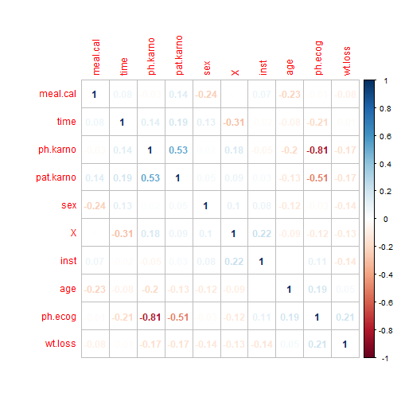
##ph.ecog&ph.karno-high negative correlation
EDA
## Bar plot
library(ggplot2)
plot1=ggplot(mecompdata, aes(x =mecompdata$status)) + geom_bar()
plot1

EDA
##BOX-PLOTS
boxplot(mecompdata$inst, data=mecompdata)
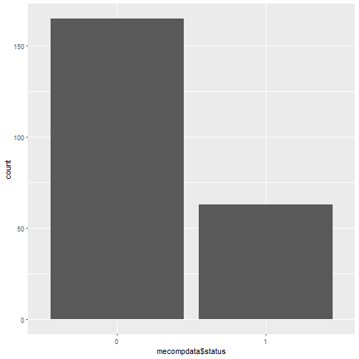
boxplot(mecompdata$time, data=mecompdata)##has outliers
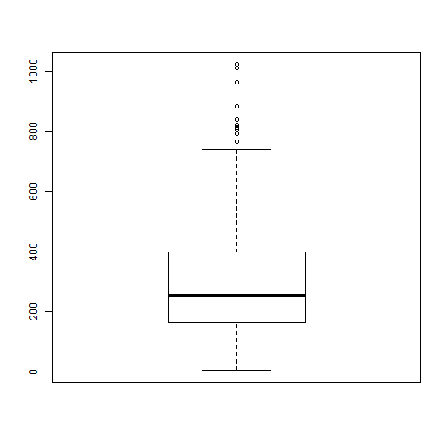
boxplot(mecompdata$age, data=mecompdata)
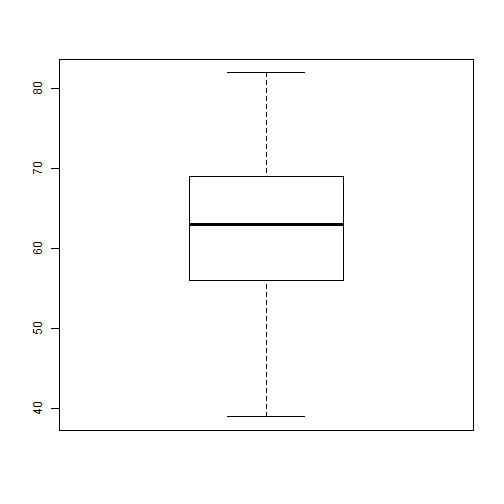
boxplot(mecompdata$ph.ecog, data=mecompdata)
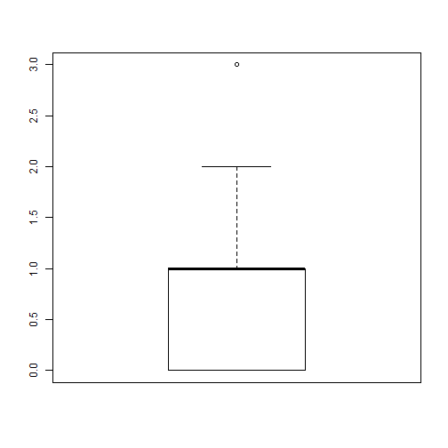
boxplot(mecompdata$ph.karno, data=mecompdata)
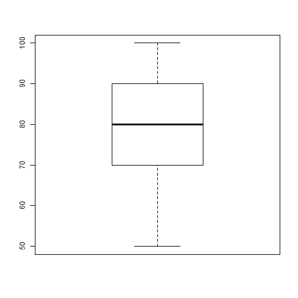
boxplot(mecompdata$pat.karno, data=mecompdata)
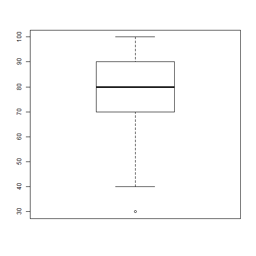
boxplot(mecompdata$meal.cal, data=mecompdata)##has outliers
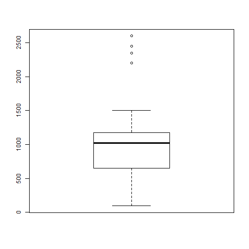
boxplot(mecompdata$wt.loss, data=mecompdata)##has outliers
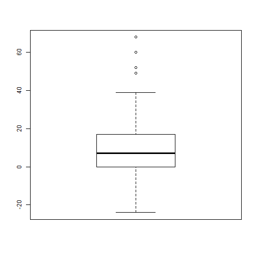
EDA
hist(mecompdata$inst,col = "pink", freq = TRUE)
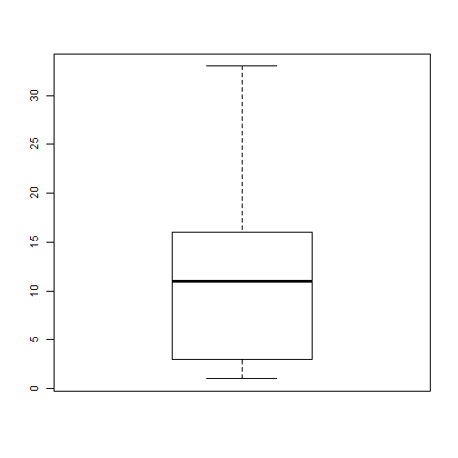
hist(mecompdata$time,col = "pink", freq = TRUE)##not linear
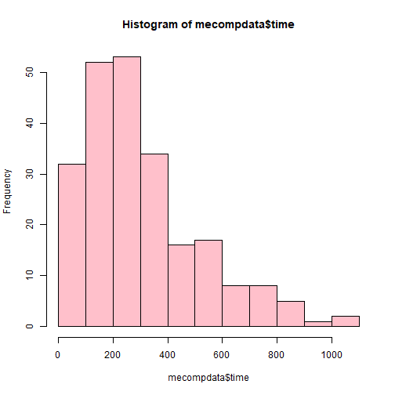
hist(mecompdata$age,col = "pink", freq = TRUE)
hist(mecompdata$ph.ecog,col = "pink", freq = TRUE)##not linear
hist(mecompdata$ph.karno,col = "pink", freq = TRUE)## not linear
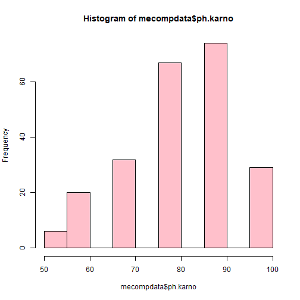
hist(mecompdata$pat.karno,col = "pink", freq = TRUE)## notlinear
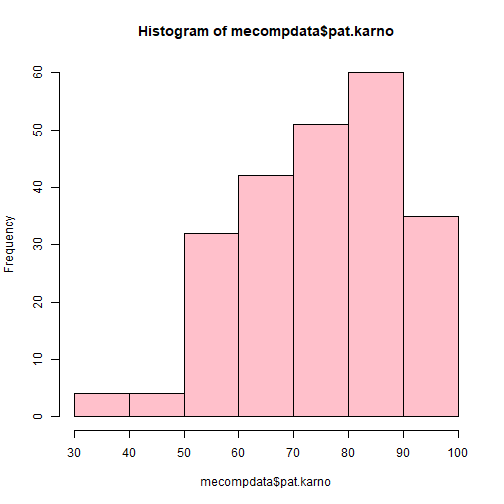
hist(mecompdata$meal.cal,col = "pink", freq = TRUE)
hist(mecompdata$wt.loss,col = "pink", freq = TRUE)
EDA
##scatter plots
pairs(~inst+time+age+ph.ecog,data=mecompdata,
main="Simple Scatterplot Matrix")
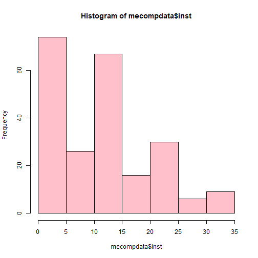
pairs(~ph.karno+pat.karno+meal.cal+wt.loss,data=mecompdata,
main="Simple Scatterplot Matrix")
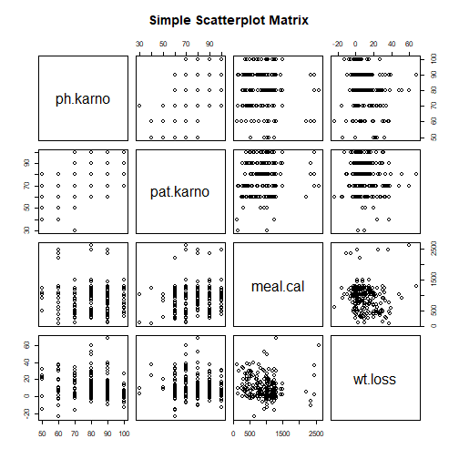
pairs(~inst+ph.karno+meal.cal+ph.ecog,data=mecompdata,
main="Simple Scatterplot Matrix")
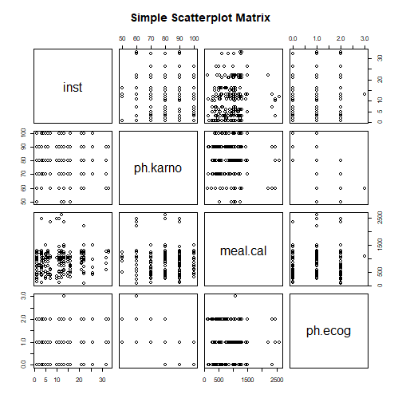
pairs(~ph.karno+time+meal.cal+ph.ecog,data=mecompdata,
main="Simple Scatterplot Matrix")
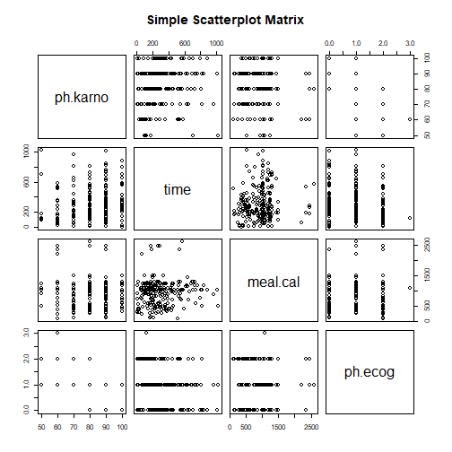
DATA MANUPULATION
##Manupulating outliers:limiting
mecompdata$time = pmin(mecompdata$time, 750)
mecompdata$meal.cal = pmin(mecompdata$meal.cal,1500)
mecompdata$meal.cal = pmax(mecompdata$meal.cal,350)
mecompdata$wt.loss = pmin(mecompdata$wt.loss,39)
mecompdata$X<-NULL
set.seed(17)
Train<- createDataPartition(mecompdata$status, p=0.7, list=FALSE)
## Error in createDataPartition(mecompdata$status, p = 0.7, list = FALSE): could not find function "createDataPartition"
nrow(mecompdata)
## [1] 228
training <- mecompdata[ Train, ]
## Error in `[.data.frame`(mecompdata, Train, ): object 'Train' not found
nrow(training)
## Error in nrow(training): object 'training' not found
testing <- mecompdata[ -Train, ]
## Error in `[.data.frame`(mecompdata, -Train, ): object 'Train' not found
nrow(testing)
## Error in nrow(testing): object 'testing' not found
MODELING
###plain glm model####
model_glm<-glm(status~.,data=training,family=binomial(link='logit'))
## Error in is.data.frame(data): object 'training' not found
pred_glm<-predict(model_glm, newdata=testing)
## Error in predict(model_glm, newdata = testing): object 'model_glm' not found
cmatrix=table(predict(model_glm, newdata=testing,type='response')>0.5, testing$status)
## Error in predict(model_glm, newdata = testing, type = "response"): object 'model_glm' not found
dimnames(cmatrix)[[1]] = c("A","B")
## Error in dimnames(cmatrix)[[1]] = c("A", "B"): object 'cmatrix' not found
colnames(cmatrix)[[1]] = c("A")
## Error in colnames(cmatrix)[[1]] = c("A"): object 'cmatrix' not found
colnames(cmatrix)[[2]] = c("B")
## Error in colnames(cmatrix)[[2]] = c("B"): object 'cmatrix' not found
Precision<-precision(cmatrix)
## Error in precision(cmatrix): could not find function "precision"
Recall<-recall(cmatrix)
## Error in recall(cmatrix): could not find function "recall"
F1 <- 2*Precision*Recall/(Precision+Recall)
## Error in eval(expr, envir, enclos): object 'Precision' not found
Accuracy <- (cmatrix[1,1]+cmatrix[2,2])/sum(cmatrix)
## Error in eval(expr, envir, enclos): object 'cmatrix' not found
Precision #0.9482759
## Error in eval(expr, envir, enclos): object 'Precision' not found
Recall #0.9591837
## function (...)
## .Internal(Recall(...))
## <bytecode: 0x000000001959a3f0>
## <environment: namespace:base>
F1 #0.8623853
## Error in eval(expr, envir, enclos): object 'F1' not found
Accuracy #0.7761194
## Error in eval(expr, envir, enclos): object 'Accuracy' not found
perf_log <- prediction(pred_glm, testing$status)
## Error in prediction(pred_glm, testing$status): could not find function "prediction"
roc <- performance(perf_log, "tpr", "fpr")
## Error in performance(perf_log, "tpr", "fpr"): could not find function "performance"
plot(roc, colorize = TRUE)
## Error in plot(roc, colorize = TRUE): object 'roc' not found
performance(perf_log, "auc")@y.values
## Error in performance(perf_log, "auc"): could not find function "performance"
##log transforming data
Formula1=status~inst+log(time)+age+ph.ecog+log(ph.karno)+log(pat.karno)+meal.cal+wt.loss
model_glm1<-glm(Formula1,data=training,family=binomial(link='logit'))
## Error in is.data.frame(data): object 'training' not found
pred_glm1<-predict(model_glm1, newdata=testing)
## Error in predict(model_glm1, newdata = testing): object 'model_glm1' not found
cmatrix=table(predict(model_glm1, newdata=testing,type='response')>0.5, testing$status)
## Error in predict(model_glm1, newdata = testing, type = "response"): object 'model_glm1' not found
dimnames(cmatrix)[[1]] = c("A","B")
## Error in dimnames(cmatrix)[[1]] = c("A", "B"): object 'cmatrix' not found
colnames(cmatrix)[[1]] = c("A")
## Error in colnames(cmatrix)[[1]] = c("A"): object 'cmatrix' not found
colnames(cmatrix)[[2]] = c("B")
## Error in colnames(cmatrix)[[2]] = c("B"): object 'cmatrix' not found
Precision<-precision(cmatrix)
## Error in precision(cmatrix): could not find function "precision"
Recall<-recall(cmatrix)
## Error in recall(cmatrix): could not find function "recall"
F1 <- 2*Precision*Recall/(Precision+Recall)
## Error in eval(expr, envir, enclos): object 'Precision' not found
Accuracy <- (cmatrix[1,1]+cmatrix[2,2])/sum(cmatrix)
## Error in eval(expr, envir, enclos): object 'cmatrix' not found
Precision #0.7580645
## Error in eval(expr, envir, enclos): object 'Precision' not found
Recall #0.9591837
## function (...)
## .Internal(Recall(...))
## <bytecode: 0x000000001959a3f0>
## <environment: namespace:base>
F1 #0.8468468
## Error in eval(expr, envir, enclos): object 'F1' not found
Accuracy #0.7462687
## Error in eval(expr, envir, enclos): object 'Accuracy' not found
perf_log1 <- prediction(pred_glm1, testing$status)
## Error in prediction(pred_glm1, testing$status): could not find function "prediction"
roc1 <- performance(perf_log1, "tpr", "fpr")
## Error in performance(perf_log1, "tpr", "fpr"): could not find function "performance"
plot(roc1, colorize = TRUE)
## Error in plot(roc1, colorize = TRUE): object 'roc1' not found
performance(perf_log1, "auc")@y.values
## Error in performance(perf_log1, "auc"): could not find function "performance"
##Feature Engineering
fecompdata=mecompdata
fecompdata$att1 <- mecompdata$ph.ecog^2
fecompdata$att2 <- mecompdata$ph.ecog^3
fecompdata$att3 <- mecompdata$ph.karno^2
fecompdata$att4 <- mecompdata$ph.karno^3
fecompdata$att5 <- mecompdata$pat.karno^2
fecompdata$att6 <- mecompdata$pat.karno^3
fecompdata$att7 <- mecompdata$ph.ecog*mecompdata$ph.karno
fecompdata$att8 <- mecompdata$ph.karno*mecompdata$pat.karno
fecompdata$att9 <- mecompdata$ph.ecog*mecompdata$pat.karno
fecompdata$att10 <- mecompdata$ph.ecog*(mecompdata$ph.karno^2)
fecompdata$att11 <- (mecompdata$ph.ecog^2)*mecompdata$ph.karno
fecompdata$att12 <- mecompdata$ph.karno*(mecompdata$pat.karno^2)
fecompdata$att13 <- (mecompdata$ph.karno^2)*mecompdata$pat.karno
fecompdata$att14 <- mecompdata$ph.ecog*(mecompdata$pat.karno^2)
fecompdata$att15 <- (mecompdata$ph.ecog^2)*mecompdata$pat.karno
fecompdata$att16 <- mecompdata$meal.cal^2
fecompdata$att17 <- mecompdata$meal.cal^3
fecompdata$att18 <- mecompdata$wt.loss^2
fecompdata$att19 <- mecompdata$wt.loss^3
fecompdata$att20 <- mecompdata$age^2
fecompdata$att21 <- mecompdata$age^3
fecompdata$att22 <- mecompdata$meal.cal*mecompdata$wt.loss
fecompdata$att23 <- mecompdata$wt.loss*mecompdata$age
fecompdata$att24 <- mecompdata$meal.cal*mecompdata$age
fecompdata$att25 <- mecompdata$meal.cal*(mecompdata$wt.loss^2)
fecompdata$att26 <- (mecompdata$meal.cal^2)*mecompdata$wt.loss
fecompdata$att27 <- mecompdata$wt.loss*(mecompdata$age^2)
fecompdata$att28 <- (mecompdata$wt.loss^2)*mecompdata$age
fecompdata$att29 <- mecompdata$meal.cal*(mecompdata$age^2)
fecompdata$att30 <- (mecompdata$meal.cal^2)*mecompdata$age
set.seed(17)
Train<- createDataPartition(fecompdata$status, p=0.7, list=FALSE)
## Error in createDataPartition(fecompdata$status, p = 0.7, list = FALSE): could not find function "createDataPartition"
nrow(fecompdata)
## [1] 228
training <- fecompdata[ Train, ]
## Error in `[.data.frame`(fecompdata, Train, ): object 'Train' not found
nrow(training)
## Error in nrow(training): object 'training' not found
testing <- fecompdata[ -Train, ]
## Error in `[.data.frame`(fecompdata, -Train, ): object 'Train' not found
nrow(testing)
## Error in nrow(testing): object 'testing' not found
Formula2=status~inst+log(time)+age+ph.ecog+log(ph.karno)+log(pat.karno)+meal.cal+wt.loss+att1+att2+att3+att4+att5+att6+att7+att8+att9+att10+att11+att12+att13+att14+att15+att16+att17+att18+att19+att20+att21+att22+att23+att24+att25+att26+att27+att28+att29+att30
model_glm2<-glm(Formula2,data=training,family=binomial(link='logit'))
## Error in is.data.frame(data): object 'training' not found
pred_glm2<-predict(model_glm2, newdata=testing)
## Error in predict(model_glm2, newdata = testing): object 'model_glm2' not found
cmatrix=table(predict(model_glm2, newdata=testing,type='response')>0.5, testing$status)
## Error in predict(model_glm2, newdata = testing, type = "response"): object 'model_glm2' not found
dimnames(cmatrix)[[1]] = c("A","B")
## Error in dimnames(cmatrix)[[1]] = c("A", "B"): object 'cmatrix' not found
colnames(cmatrix)[[1]] = c("A")
## Error in colnames(cmatrix)[[1]] = c("A"): object 'cmatrix' not found
colnames(cmatrix)[[2]] = c("B")
## Error in colnames(cmatrix)[[2]] = c("B"): object 'cmatrix' not found
Precision<-precision(cmatrix)
## Error in precision(cmatrix): could not find function "precision"
Recall<-recall(cmatrix)
## Error in recall(cmatrix): could not find function "recall"
F1 <- 2*Precision*Recall/(Precision+Recall)
## Error in eval(expr, envir, enclos): object 'Precision' not found
Accuracy <- (cmatrix[1,1]+cmatrix[2,2])/sum(cmatrix)
## Error in eval(expr, envir, enclos): object 'cmatrix' not found
Precision #0.7169811
## Error in eval(expr, envir, enclos): object 'Precision' not found
Recall #0.7755102
## function (...)
## .Internal(Recall(...))
## <bytecode: 0x000000001959a3f0>
## <environment: namespace:base>
F1 #0.745098
## Error in eval(expr, envir, enclos): object 'F1' not found
Accuracy #0.6119403###heavy dip in accuracy
## Error in eval(expr, envir, enclos): object 'Accuracy' not found
perf_log2 <- prediction(pred_glm2, testing$status)
## Error in prediction(pred_glm2, testing$status): could not find function "prediction"
roc2 <- performance(perf_log2, "tpr", "fpr")
## Error in performance(perf_log2, "tpr", "fpr"): could not find function "performance"
plot(roc2, colorize = TRUE)
## Error in plot(roc2, colorize = TRUE): object 'roc2' not found
performance(perf_log2, "auc")@y.values
## Error in performance(perf_log2, "auc"): could not find function "performance"
##Principal component analysis
str(fecompdata)
## 'data.frame': 228 obs. of 40 variables:
## $ inst : int 3 3 3 5 1 12 7 11 1 7 ...
## $ time : num 306 455 750 210 750 750 310 361 218 166 ...
## $ status : Factor w/ 2 levels "0","1": 1 1 2 1 1 2 1 1 1 1 ...
## ..- attr(*, "contrasts")= num [1:2, 1] 0 1
## .. ..- attr(*, "dimnames")=List of 2
## .. .. ..$ : chr "0" "1"
## .. .. ..$ : chr "2"
## $ age : int 74 68 56 57 60 74 68 71 53 61 ...
## $ sex : int 1 1 1 1 1 1 2 2 1 1 ...
## $ ph.ecog : int 1 0 0 1 0 1 2 2 1 2 ...
## $ ph.karno : int 90 90 90 90 100 50 70 60 70 70 ...
## $ pat.karno: int 100 90 90 60 90 80 60 80 80 70 ...
## $ meal.cal : num 1175 1225 1025 1150 1025 ...
## $ wt.loss : num 30 15 15 11 0 0 10 1 16 34 ...
## $ att1 : num 1 0 0 1 0 1 4 4 1 4 ...
## $ att2 : num 1 0 0 1 0 1 8 8 1 8 ...
## $ att3 : num 8100 8100 8100 8100 10000 2500 4900 3600 4900 4900 ...
## $ att4 : num 729000 729000 729000 729000 1000000 125000 343000 216000 343000 343000 ...
## $ att5 : num 10000 8100 8100 3600 8100 6400 3600 6400 6400 4900 ...
## $ att6 : num 1000000 729000 729000 216000 729000 512000 216000 512000 512000 343000 ...
## $ att7 : int 90 0 0 90 0 50 140 120 70 140 ...
## $ att8 : int 9000 8100 8100 5400 9000 4000 4200 4800 5600 4900 ...
## $ att9 : int 100 0 0 60 0 80 120 160 80 140 ...
## $ att10 : num 8100 0 0 8100 0 2500 9800 7200 4900 9800 ...
## $ att11 : num 90 0 0 90 0 50 280 240 70 280 ...
## $ att12 : num 900000 729000 729000 324000 810000 320000 252000 384000 448000 343000 ...
## $ att13 : num 810000 729000 729000 486000 900000 200000 294000 288000 392000 343000 ...
## $ att14 : num 10000 0 0 3600 0 6400 7200 12800 6400 9800 ...
## $ att15 : num 100 0 0 60 0 80 240 320 80 280 ...
## $ att16 : num 1380625 1500625 1050625 1322500 1050625 ...
## $ att17 : num 1.62e+09 1.84e+09 1.08e+09 1.52e+09 1.08e+09 ...
## $ att18 : num 900 225 225 121 0 ...
## $ att19 : num 27000 3375 3375 1331 0 ...
## $ att20 : num 5476 4624 3136 3249 3600 ...
## $ att21 : num 405224 314432 175616 185193 216000 ...
## $ att22 : num 35250 18375 15375 12650 0 ...
## $ att23 : num 2220 1020 840 627 0 ...
## $ att24 : num 86950 83300 57400 65550 61500 ...
## $ att25 : num 1057500 275625 230625 139150 0 ...
## $ att26 : num 41418750 22509375 15759375 14547500 0 ...
## $ att27 : num 164280 69360 47040 35739 0 ...
## $ att28 : num 66600 15300 12600 6897 0 ...
## $ att29 : num 6434300 5664400 3214400 3736350 3690000 ...
## $ att30 : num 1.02e+08 1.02e+08 5.88e+07 7.54e+07 6.30e+07 ...
##removing dependent variable
pca.test <-testing[,-3]
## Error in eval(expr, envir, enclos): object 'testing' not found
pca.train <- training[,-3]
## Error in eval(expr, envir, enclos): object 'training' not found
##applying PCA
prin_comp <- prcomp(pca.train, scale. = T)
## Error in prcomp(pca.train, scale. = T): object 'pca.train' not found
##Printing rotation and std-dev
prin_comp$scale
## Error in eval(expr, envir, enclos): object 'prin_comp' not found
prin_comp$rotation
## Error in eval(expr, envir, enclos): object 'prin_comp' not found
##first 5 rows of 4 pc's
prin_comp$rotation[1:5,1:4]
## Error in eval(expr, envir, enclos): object 'prin_comp' not found
##plot
biplot(prin_comp, scale = 0)
## Error in biplot(prin_comp, scale = 0): object 'prin_comp' not found
##std_dev
std_dev <- prin_comp$sdev
## Error in eval(expr, envir, enclos): object 'prin_comp' not found
pr_var <- std_dev^2
## Error in eval(expr, envir, enclos): object 'std_dev' not found
#check variance of first 10 components
pr_var[1:10]
## Error in eval(expr, envir, enclos): object 'pr_var' not found
prop_varex <- pr_var/sum(pr_var)
## Error in eval(expr, envir, enclos): object 'pr_var' not found
prop_varex[1:20]
## Error in eval(expr, envir, enclos): object 'prop_varex' not found
##screeplot- first 11 PC'S EXPLAIN 95% OF VARIATION
plot(prop_varex, xlab = "Principal Component",
ylab = "Proportion of Variance Explained",
type = "b")
## Error in plot(prop_varex, xlab = "Principal Component", ylab = "Proportion of Variance Explained", : object 'prop_varex' not found
##This confirms the above infrence
plot(cumsum(prop_varex), xlab = "Principal Component",
ylab = "Cumulative Proportion of Variance Explained",
type = "b")
## Error in plot(cumsum(prop_varex), xlab = "Principal Component", ylab = "Cumulative Proportion of Variance Explained", : object 'prop_varex' not found
##prediction
train.data <- data.frame(status= training$status, prin_comp$x)
## Error in data.frame(status = training$status, prin_comp$x): object 'training' not found
#select first 10 PCAs
train.data <- train.data[,1:11]
## Error in eval(expr, envir, enclos): object 'train.data' not found
##run a model
model_glm4 <- glm(status ~ .,data = train.data,family=binomial(link='logit'))
## Error in is.data.frame(data): object 'train.data' not found
model_glm4
## Error in eval(expr, envir, enclos): object 'model_glm4' not found
#transform test into PCA
test.data <- predict(prin_comp, newdata = pca.test)
## Error in predict(prin_comp, newdata = pca.test): object 'prin_comp' not found
test.data <- as.data.frame(test.data)
## Error in as.data.frame(test.data): object 'test.data' not found
#select the first 11 components
test.data <- test.data[,1:11]
## Error in eval(expr, envir, enclos): object 'test.data' not found
test.data$status <-testing$status
## Error in eval(expr, envir, enclos): object 'testing' not found
test.data <- as.data.frame(test.data)
## Error in as.data.frame(test.data): object 'test.data' not found
#make prediction on test data
pred_glm4 <- predict(model_glm4, test.data)
## Error in predict(model_glm4, test.data): object 'model_glm4' not found
cmatrix=table(pred_glm4>0.5, test.data$status)
## Error in table(pred_glm4 > 0.5, test.data$status): object 'pred_glm4' not found
dimnames(cmatrix)[[1]] = c("A","B")
## Error in dimnames(cmatrix)[[1]] = c("A", "B"): object 'cmatrix' not found
colnames(cmatrix)[[1]] = c("A")
## Error in colnames(cmatrix)[[1]] = c("A"): object 'cmatrix' not found
colnames(cmatrix)[[2]] = c("B")
## Error in colnames(cmatrix)[[2]] = c("B"): object 'cmatrix' not found
Precision<-precision(cmatrix)
## Error in precision(cmatrix): could not find function "precision"
Recall<-recall(cmatrix)
## Error in recall(cmatrix): could not find function "recall"
F1 <- 2*Precision*Recall/(Precision+Recall)
## Error in eval(expr, envir, enclos): object 'Precision' not found
Accuracy <- (cmatrix[1,1]+cmatrix[2,2])/sum(cmatrix)
## Error in eval(expr, envir, enclos): object 'cmatrix' not found
Precision #0.7741935
## Error in eval(expr, envir, enclos): object 'Precision' not found
Recall #0.9795918
## function (...)
## .Internal(Recall(...))
## <bytecode: 0x000000001959a3f0>
## <environment: namespace:base>
F1 #0.8648649
## Error in eval(expr, envir, enclos): object 'F1' not found
Accuracy #0.7761194##improved accuracy
## Error in eval(expr, envir, enclos): object 'Accuracy' not found
perf_log4 <- prediction(pred_glm4, test.data$status)
## Error in prediction(pred_glm4, test.data$status): could not find function "prediction"
roc4 <- performance(perf_log4, "tpr", "fpr")
## Error in performance(perf_log4, "tpr", "fpr"): could not find function "performance"
plot(roc4, colorize = TRUE)
## Error in plot(roc4, colorize = TRUE): object 'roc4' not found
performance(perf_log4, "auc")@y.values
## Error in performance(perf_log4, "auc"): could not find function "performance"
##stewpise selection
fecompdata=mecompdata
fecompdata$att1 <- mecompdata$ph.ecog^2
fecompdata$att2 <- mecompdata$ph.ecog^3
fecompdata$att3 <- mecompdata$ph.karno^2
fecompdata$att4 <- mecompdata$ph.karno^3
fecompdata$att5 <- mecompdata$pat.karno^2
fecompdata$att6 <- mecompdata$pat.karno^3
fecompdata$att7 <- mecompdata$ph.ecog*mecompdata$ph.karno
fecompdata$att8 <- mecompdata$ph.karno*mecompdata$pat.karno
fecompdata$att9 <- mecompdata$ph.ecog*mecompdata$pat.karno
fecompdata$att10 <- mecompdata$ph.ecog*(mecompdata$ph.karno^2)
fecompdata$att11 <- (mecompdata$ph.ecog^2)*mecompdata$ph.karno
fecompdata$att12 <- mecompdata$ph.karno*(mecompdata$pat.karno^2)
fecompdata$att13 <- (mecompdata$ph.karno^2)*mecompdata$pat.karno
fecompdata$att14 <- mecompdata$ph.ecog*(mecompdata$pat.karno^2)
fecompdata$att15 <- (mecompdata$ph.ecog^2)*mecompdata$pat.karno
fecompdata$att16 <- mecompdata$meal.cal^2
fecompdata$att17 <- mecompdata$meal.cal^3
fecompdata$att18 <- mecompdata$wt.loss^2
fecompdata$att19 <- mecompdata$wt.loss^3
fecompdata$att20 <- mecompdata$age^2
fecompdata$att21 <- mecompdata$age^3
fecompdata$att22 <- mecompdata$meal.cal*mecompdata$wt.loss
fecompdata$att23 <- mecompdata$wt.loss*mecompdata$age
fecompdata$att24 <- mecompdata$meal.cal*mecompdata$age
fecompdata$att25 <- mecompdata$meal.cal*(mecompdata$wt.loss^2)
fecompdata$att26 <- (mecompdata$meal.cal^2)*mecompdata$wt.loss
fecompdata$att27 <- mecompdata$wt.loss*(mecompdata$age^2)
fecompdata$att28 <- (mecompdata$wt.loss^2)*mecompdata$age
fecompdata$att29 <- mecompdata$meal.cal*(mecompdata$age^2)
fecompdata$att30 <- (mecompdata$meal.cal^2)*mecompdata$age
set.seed(17)
Train<- createDataPartition(fecompdata$status, p=0.7, list=FALSE)
## Error in createDataPartition(fecompdata$status, p = 0.7, list = FALSE): could not find function "createDataPartition"
nrow(fecompdata)
## [1] 228
training <- fecompdata[ Train, ]
## Error in `[.data.frame`(fecompdata, Train, ): object 'Train' not found
nrow(training)
## Error in nrow(training): object 'training' not found
testing <- fecompdata[ -Train, ]
## Error in `[.data.frame`(fecompdata, -Train, ): object 'Train' not found
nrow(testing)
## Error in nrow(testing): object 'testing' not found
null<-glm(status~1,data=training,family=binomial(link='logit'))
## Error in is.data.frame(data): object 'training' not found
full<-glm(status~.,data=training,family=binomial(link='logit'))
## Error in is.data.frame(data): object 'training' not found
step(null, scope=list(lower=null, upper=full), direction="forward")
## Error in terms(object): object 'null' not found
model_glm5<-glm(status~ inst+sex+ph.ecog+age,data=training,family=binomial(link='logit'))
## Error in is.data.frame(data): object 'training' not found
pred_glm5<-predict(model_glm5, newdata=testing)
## Error in predict(model_glm5, newdata = testing): object 'model_glm5' not found
cmatrix=table(predict(model_glm5, newdata=testing,type='response')>0.5, testing$status)
## Error in predict(model_glm5, newdata = testing, type = "response"): object 'model_glm5' not found
dimnames(cmatrix)[[1]] = c("A","B")
## Error in dimnames(cmatrix)[[1]] = c("A", "B"): object 'cmatrix' not found
colnames(cmatrix)[[1]] = c("A")
## Error in colnames(cmatrix)[[1]] = c("A"): object 'cmatrix' not found
colnames(cmatrix)[[2]] = c("B")
## Error in colnames(cmatrix)[[2]] = c("B"): object 'cmatrix' not found
Precision<-precision(cmatrix)
## Error in precision(cmatrix): could not find function "precision"
Recall<-recall(cmatrix)
## Error in recall(cmatrix): could not find function "recall"
F1 <- 2*Precision*Recall/(Precision+Recall)
## Error in eval(expr, envir, enclos): object 'Precision' not found
Accuracy <- (cmatrix[1,1]+cmatrix[2,2])/sum(cmatrix)
## Error in eval(expr, envir, enclos): object 'cmatrix' not found
Precision #0.7931034
## Error in eval(expr, envir, enclos): object 'Precision' not found
Recall #0.9387755
## function (...)
## .Internal(Recall(...))
## <bytecode: 0x000000001959a3f0>
## <environment: namespace:base>
F1 #0.8598131
## Error in eval(expr, envir, enclos): object 'F1' not found
Accuracy #0.7761194###same accuracy as PCA
## Error in eval(expr, envir, enclos): object 'Accuracy' not found
perf_log5 <- prediction(pred_glm5, testing$status)
## Error in prediction(pred_glm5, testing$status): could not find function "prediction"
roc5 <- performance(perf_log5, "tpr", "fpr")
## Error in performance(perf_log5, "tpr", "fpr"): could not find function "performance"
plot(roc5, colorize = TRUE)
## Error in plot(roc5, colorize = TRUE): object 'roc5' not found
performance(perf_log5, "auc")@y.values
## Error in performance(perf_log5, "auc"): could not find function "performance"
ROC CURVE
plot(roc, colorize=TRUE)
## Error in plot(roc, colorize = TRUE): object 'roc' not found
plot(roc1, add = TRUE, colorize = TRUE)
## Error in plot(roc1, add = TRUE, colorize = TRUE): object 'roc1' not found
plot(roc2, add = TRUE, colorize = TRUE)
## Error in plot(roc2, add = TRUE, colorize = TRUE): object 'roc2' not found
plot(roc4, add = TRUE, colorize = TRUE)##BETTER ROCR
## Error in plot(roc4, add = TRUE, colorize = TRUE): object 'roc4' not found
plot(roc5, add = TRUE, colorize = TRUE)
## Error in plot(roc5, add = TRUE, colorize = TRUE): object 'roc5' not found